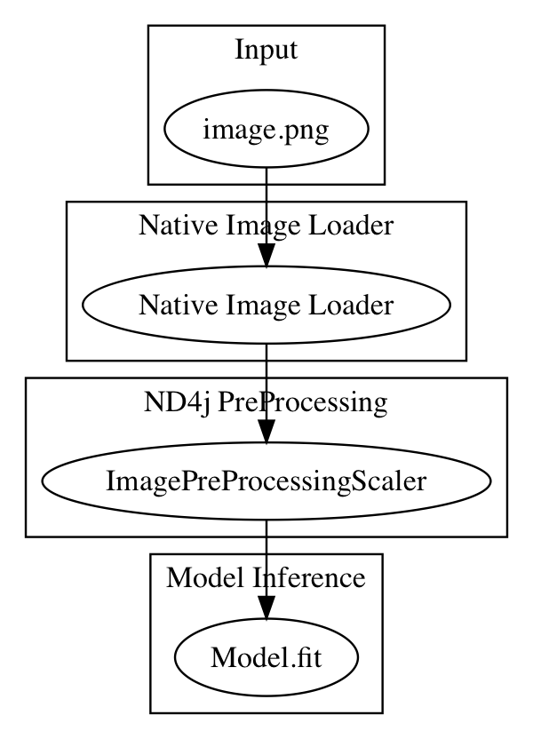

DataVec
- Neural networks process numeric arrays
- Datavec helps you get from your_data => numeric array
Data Sources
- Log files
- Text documents
- Tabular data
- Images and video
- and more !!
Goal
- Build a user freindly comprehensive toolkit for data pilelines into Neural Netowrks
DataVec Features
- Transformation
- Scaling
- Shuffling
- Joining
- Splitting
Commonly Used Features
- RecordReaders
- Read files or input, convert to List of Writables
- Normalizers
- Standardize, scale or normalize the data
- Transform Process
- Join datasets, replace strings with numerics, extract labels
Diagram of available ETL paths

DataVec Image Basics
- Images are arrays of pixel values

Code Example: Load above image as INDArray
INDArray imagematrix = loader.asMatrix(image);
System.out.println(imagematrix);
Output
[[[[255.00, 255.00, 255.00, 255.00],
[255.00, 0.00, 0.00, 255.00],
[255.00, 0.00, 0.00, 255.00],
[255.00, 255.00, 255.00, 255.00]]]]
Code Example: Scale values between 0 and 1
DataNormalization scaler = new ImagePreProcessingScaler(0,1);
scaler.transform(imagematrix);
Output
[[[[1.00, 1.00, 1.00, 1.00],
[1.00, 0.00, 0.00, 1.00],
[1.00, 0.00, 0.00, 1.00],
[1.00, 1.00, 1.00, 1.00]]]]
Manipulating Images with DataVec
- Scale images to same dimensions with RecordReader
ImageRecordReader recordReader = new ImageRecordReader(height,width,channels);
- Scale image to appropriate dimenstions with NativeImageLoader
NativeImageLoader loader = new NativeImageLoader(height, width, channels); \\ load and scale
INDArray image = loader.asMatrix(file); \\ create INDarray
INDArray output = model.output(image); \\ get model prediction for image
Image Data Set Augmentation
- Create "larger" training set with OpenCV/dataVec tools
- Transform
- Crop
- Skew
Applying Labels
- ParentPathLabelGenerator
- PathLabelGenerator
Available Record Readers
- Table of available record readers:
Code Example: Image Transform
- Scale pixel values
DataNormalization scaler = new ImagePreProcessingScaler(0,1);
scaler.fit(dataIter);
dataIter.setPreProcessor(scaler);
Available ND4J Pre-Processors
- ImagePreProcessingScaler
- min max scaling default 0 + - 1
- NormalizerMinMaxScaler
- Scale values observed min -> 0, observed max -> 1
- NormalizerStandardize
- moving column wise variance and mean
- no need to pre-process
Image Transforms with JavaCV, OpenCV, ffmpeg
- Libraries included
Image pipeline Single Image to Pre-Trained Model

Code Example: CSV Data to INDArray
public class CSVExample {
private static Logger log = LoggerFactory.getLogger(CSVExample.class);
public static void main(String[] args) throws Exception {
//First: get the dataset using the record reader. CSVRecordReader handles loading/parsing
int numLinesToSkip = 0;
String delimiter = ",";
RecordReader recordReader = new CSVRecordReader(numLinesToSkip,delimiter);
recordReader.initialize(new FileSplit(new ClassPathResource("iris.txt").getFile()));
//Second: the RecordReaderDataSetIterator handles conversion to DataSet objects, ready for use in neural network
int labelIndex = 4; //5 values in each row of the iris.txt CSV: 4 input features followed by an integer label (class) index. Labels are the 5th value (index 4) in each row
int numClasses = 3; //3 classes (types of iris flowers) in the iris data set. Classes have integer values 0, 1 or 2
int batchSize = 150; //Iris data set: 150 examples total. We are loading all of them into one DataSet (not recommended for large data sets)
DataSetIterator iterator = new RecordReaderDataSetIterator(recordReader,batchSize,labelIndex,numClasses);
DataSet allData = iterator.next();
DataVec Code Explained
- RecordReader recordReader = new CSVRecordReader(numLinesToSkip,delimiter);
- A RecordReader prepares a list of Writables
- A Writable is an efficient Serialization format
- DataSetIterator iterator = new RecordReaderDataSetIterator
- We are in DL4J know, with DataSetIterator
- Builds an Iterator over the list of records
- DataSet allData = iterator.next();
- Builds a DataSet
- INDArray of Features, INDArray of Labels
Frequently Used DataVec classes
- CSVRecordReader
- CSV text data
- ImageRecordReader
- Convert image to numeric array representing pixel values
- JacksonRecordReader
- Parses JSON records
- ParentPathLabelGenerator
- Builds labels based on directory path
- Transform, Transform Process Builder, TransformProcess
- Conversion tools